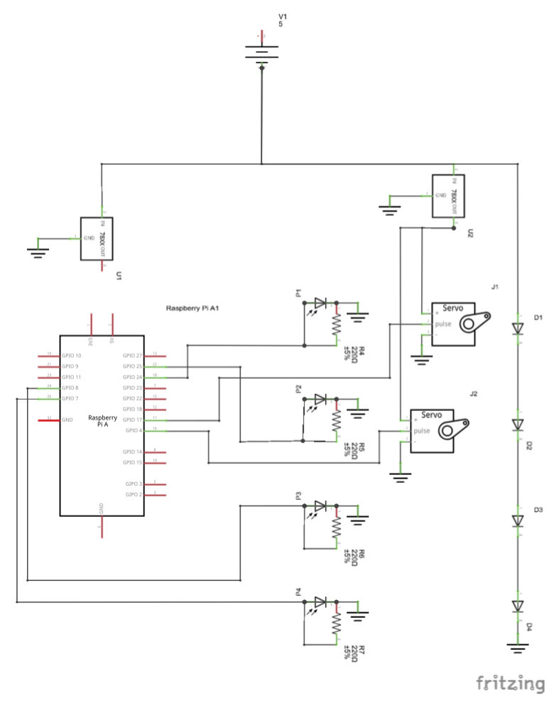
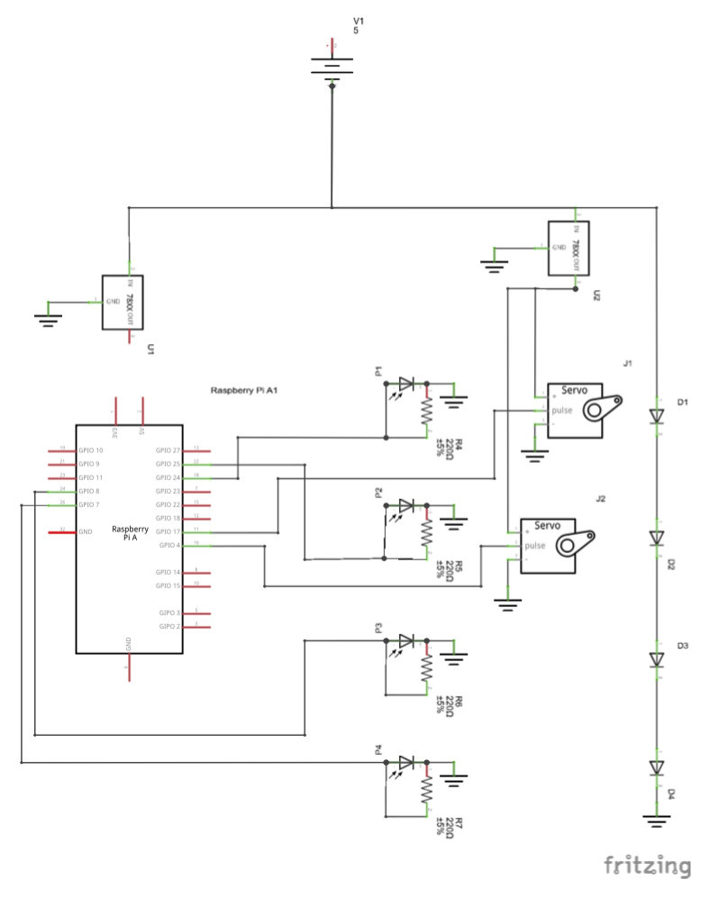

Hello! Mary here, reporting in on the States of the Team. This sprint has been full of awesome developments, including the acquisition of materials and getting the lasers working. I’m going to focus on our progress towards having a fully working model and preparing to create the final model.
Our sketch model from the last sprint was a lazer mounted to a servo that used to demonstrate that the lazer could bounce off of the mirror and could be received by the photodiode. From this basic model, we took a break from the technical sketch model and looked at what the actual game experience would be. We created our second sketch model, a cardboard box with yarn crisscrossing across the inside. This served as a model for what we want the full sized product to be. The yarn represented each lazer beam, with some bouncing back and forth and some hitting once and terminating.
Yarn prototype created for the purpose of imagining the game experience.During this sprint we determined that the best number of lazers to use would be 4, with two of them moving on servos and two bouncing back and forth in the maze off of mirrors. This means that, total, there will be 10 beams, as the bouncing lazers will each create 4 beams from one lazer.
The next step that we made towards a working model this sprint was to create our LazerBox 2.0. This model built off of the two previous sketch models and combined them into a mini version of our final project. Taking the 4 lasers, we hooked them up to our breadboard and Arduino and placed them through one side of the box. We then attached mirrors to the other side to bounce two of the lasers and attached the retroreflective tape to bounce the beam directly back to the photodiode. We attached the lazer and photodiode together. This allowed the lazer to bounce directly back on itself due to retroreflective tape. In addition, there is also some diffusion of light and the photodiode on top of the lazer is able to detect that.
 LazerBox 2.0, which is essentially a scaled-down version of the final lazer maze form.

Circuit diagram for the laser-servo-sensor setup.
LazerBox 2.0, which is essentially a scaled-down version of the final lazer maze form.

Circuit diagram for the laser-servo-sensor setup.
LazerBox 2.0 is essentially a small version of our final product, and now that we have this working, our next sprint can be spent working on building the full sized version and creating the user interface. Thanks to the wonderful Sara Hendren, we have a bunch of large sheets of cardboard to use for our walls and we just bought a fog machine that will run inside the maze in order to make the lazers visible.